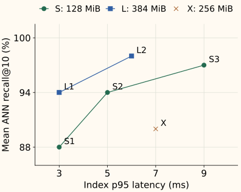

Benchmark Vector Search: Recall, Tail Latency, Memory, and Filters
Before you start: HNSW and Annoy search mechanics. This chapter measures their approximation and systems cost; the evaluation series handles judged usefulness and user outcomes.
“The index takes three milliseconds” leaves out the question that makes the number useful: three milliseconds to do what, at what quality, under what load? A faster configuration may miss more neighbors, use more memory, or exclude the queue where requests spend most of their time.
Build the benchmark around a decision: for example, choose the lowest-latency configuration that reaches a declared recall target within a memory budget. The figures below use constructed numbers to explain the decisions. They do not compare measured performance of particular libraries.
Freeze the task and build an exact reference
Keep the corpus vectors, query vectors, item IDs, embedding version, normalization, distance and eligibility rules fixed. Set K, the number of requested neighbors. Compute exact top-K over the eligible corpus for each query; a flat index or blocked score computation can provide this reference.
For ANN overlap recall, count how many exact reference IDs appear in the approximate top-K, then divide by the reference count. If the exact set is {A, B, C} and the approximate result is [B, D, A], recall is 2/3. Average the per-query values over a declared query set. This measures agreement with exact vector search; relevance recall asks a different question.
When fewer than K items are eligible, use the smaller reference set and report how often this occurs. With no eligible items, overlap recall is undefined; report that count separately. Flag invalid, duplicate or ineligible returned IDs before interpreting quality. Do not let an algorithm return more than K guesses to inflate overlap.
Python: a small exact reference with explicit tie and empty-set behavior
The input arrays contain finite, compatible vectors and a Boolean eligibility mask. Normalize upstream if the desired objective is cosine. Row numbers serve as IDs; lower IDs break equal-score ties.
import numpy as np
def exact_topk(query, items, k, eligible):
if isinstance(k, bool) or not isinstance(k, int) or k < 1:
raise ValueError("k must be a positive integer")
ids = np.flatnonzero(eligible)
scores = items[ids] @ query
order = np.lexsort((ids, -scores))
return ids[order[:k]].tolist()
def overlap_recall(reference, approximate):
# Pass validated, eligible top-K IDs for the same query.
if len(set(approximate)) != len(approximate):
raise ValueError("duplicate approximate IDs")
if len(approximate) > len(reference):
raise ValueError("too many returned IDs")
if not reference:
return None
return len(set(reference) & set(approximate)) / len(reference)
items = np.array([[1., 0.], [1., 0.], [.6, .8], [0., 1.]])
query = np.array([1., 0.])
eligible = np.array([True, True, True, False])
reference = exact_topk(query, items, 2, eligible)
print(reference, overlap_recall(reference, [1, 2])) # [0, 1] 0.5
Ties need a declared convention. With K = 1, the code chooses ID 0 over equally scoring ID 1; strict ID-overlap would penalize returning 1. A tie-aware evaluator can accept equally good alternatives, but that is a different scoring rule. Also control numerical precision near ties and confirm the API’s distance convention: Faiss reports squared L2 distance, while inner product needs normalization to represent cosine.
Draw the timer around the work you claim
An index timer starts with a query vector ready and stops when neighbor IDs and scores are available. A service timer may also include queueing, embedding generation, filtering, reranking and response formatting. A client-observed timer can add transport and client-side work. State the start and end events explicitly.
At a 20 ms queue wait, the index’s 3 ms is only part of the 35 ms service response. Reducing lookup to 2 ms would save one millisecond if everything else stayed fixed. That can matter, but it does not turn this request into a two-millisecond experience.
Use a monotonic elapsed-time clock, such as Python’s performance counter, and retain per-request records. For asynchronous accelerator work, ensure completion is included in the timed boundary: CUDA synchronization waits for queued device work. A timer around submission alone can miss the actual computation; device-event timing and application latency also have different boundaries.
Measure warm steady-state and cold-start or cold-page behavior separately. Record hardware, library version, threads, batch size, concurrency and index residency. A batch-throughput result cannot be relabeled as interactive latency. Historical Faiss experiments explicitly distinguish workload and recall conventions; their reported numbers belong to those settings.
Read the latency distribution, not just its average
Sort the request latencies from smallest to largest. A p95 summarizes the upper part of that distribution, but the precise estimator matters. Our nearest-rank convention takes sorted position ceil(0.95 × N), where N is the number of requests and ceil means round upward. For 20 requests, p95 is the 19th value and p99 is the 20th.
With one slow request, the mean is 6.9 ms and p95 remains 2 ms. With two slow requests, the mean is 11.8 ms and p95 jumps to 100 ms. The threshold moved by one observation; the underlying conclusion needs more representative samples. Report sample count, repeat runs and the quantile method rather than giving spurious decimal precision.
Python: reproduce the two tail examples
method="inverted_cdf" matches this nearest-rank convention. NumPy’s default linear interpolation can give different answers.
import numpy as np
for slow in [1, 2]:
latency_ms = np.array([2.] * (20 - slow) + [100.] * slow)
p95, p99 = np.quantile(latency_ms, [.95, .99], method="inverted_cdf")
print(latency_ms.mean(), p95, p99)
# 6.9 2.0 100.0
# 11.8 100.0 100.0
See NumPy’s quantile definitions. Calculate a service p95 from complete request durations: adding phase p95 values does not, in general, give the p95 of their sum.
Make offered load independent when that matches the workload
A client that waits for each response before sending the next request is closed-loop. When the service slows, that client sends less traffic, which can conceal behavior under sustained arrivals. An arrival-scheduled test can expose queue growth, but the generator itself must keep up.
Record intended arrival times, actual starts, completions, errors and timeouts. Measure offered and completed queries per second. Do not drop timed-out requests and report only the surviving fast ones. wrk2’s discussion of coordinated omission explains why measuring from intended arrival can reveal waiting that a send-to-response timer misses. Choose the arrival model that represents the claim you intend to make.
Choose a configuration under both quality and resource constraints
Sweep query effort for each meaningful build configuration. Each setting produces an operating point: recall and latency under a fixed workload, with its memory and build costs recorded. Compare points meeting the same quality target; the fastest low-recall result may not be useful.
The synthetic points below use three small-build settings S1–S3 at 128 MiB, two large-build settings L1–L2 at 384 MiB, and an alternative X at 256 MiB. Recall is mean ANN overlap recall@10; latency is warm index-only p95 for the same hypothetical workload. Choose a memory budget and minimum recall:

{kind=link}
At 128 MiB and a 94% recall target, S2 wins at 5 ms. Allowing 384 MiB makes L1 feasible at 3 ms. Raising the target to 99% leaves no feasible point in this sweep. That means the sweep has not found a suitable setting; it does not prove the target is impossible.
A point is dominated if another feasible point achieves at least as much recall at no greater latency, with one strict improvement. The remaining points form a Pareto frontier. X is dominated by S2, which is faster, more accurate and smaller. L1 dominates S2 in the latency–recall plane, but requires more memory; it cannot replace S2 under a 128 MiB cap.
Sampling noise can blur nearby points. Repeat measurements under matched conditions, retain per-query recall and timing data, and quantify uncertainty at the statistic you compare. A confidence interval for mean latency does not answer a question about p99. The paired-comparison chapter supplies the statistical foundations.
Repeat the experiment for filters and deployment costs
A filter retaining a random 10% of items can behave differently from a category filter retaining 10%, because eligible items may cluster in vector space. Freeze the same eligibility predicate in exact and approximate search, vary both selectivity and query category, and inspect short-result and empty-result rates. The filtering example explains how a post-filtered shortlist can lose usable results even before ANN error enters.
Report vector payload, stored index size, resident process memory and peak construction memory with their measurement methods. These quantities overlap; do not simply add them. For shared mapped indexes, state how shared pages are accounted for. Include index build or rebuild time and how new versions become available to queries.
A compact benchmark record should let another reader recreate the corpus, exact neighbors, query workload, index settings and timer boundaries. Pair the resulting approximation–cost report with judged relevance before deciding that a faster vector index improved search.
References and further reading
- Faiss: metric types and distances — score orientation, squared L2 output and normalized inner product for cosine search.
- Faiss: one-million-vector experiments — historical operating-point comparisons with explicit hardware, batching and recall conventions.
- Python: performance counters — elapsed-time measurement and the difference from process CPU time.
- PyTorch: CUDA synchronization — completion of device work when defining a timed region.
- NumPy: quantile methods — the distinction between the illustrated empirical quantiles and default interpolation.
- Gil Tene: wrk2 and coordinated omission — arrival plans, delayed requests and latency measurement under load.